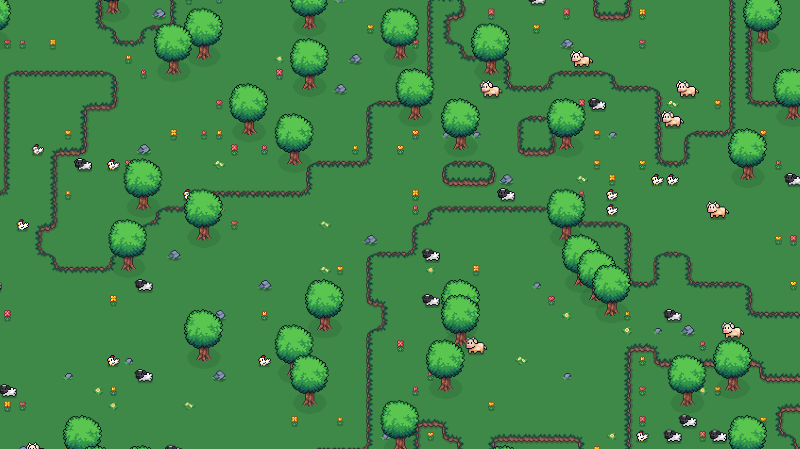

<link rel="stylesheet" href="https://cdnjs.cloudflare.com/ajax/libs/font-awesome/6.5.0/css/all.min.css" crossorigin="anonymous" referrerpolicy="no-referrer" />

<style>
  :root {
    --black: #2A3133;
    --light: #606364;
    --white: #bcbcbc;
    --title: 'Montserrat', sans-serif;
  }

  body {
  background-color: var(--light);
  margin: 0;
  padding: 0;
  font-family: 'Work Sans', sans-serif;
  color: var(--white);
    }   
  .project-card {
    max-width: 75%;
    margin: 5rem auto;
    background: var(--light);
    padding: 2rem;
    font-family: var(--title);
    color: var(--white);
    position: relative;
    z-index: 1;
  }

  .project-card h2 {
    font-size: 2rem;
    margin-bottom: 1rem;
    color: var(--white);
  }

  .project-card p {
    font-size: 1rem;
    color: #d3d3d3;
    margin-bottom: 1.5rem;
    font-family: 'Work Sans', sans-serif;
  }

  .tech-tags {
    display: flex;
    flex-wrap: wrap;
    gap: 0.5rem;
    margin-bottom: 2rem;
  }

  .tech-tags span {
    background-color: #2A3133;
    color: #bcbcbc;
    padding: 0.3rem 0.8rem;
    border-radius: 999px;
    font-size: 0.85rem;
    font-weight: 500;
  }

  .slider-wrapper {
    position: relative;
  }

  .slider-container {
    display: flex;
    overflow-x: auto;
    scroll-snap-type: x mandatory;
    gap: 1rem;
    padding: 0.5rem 1rem;
    scroll-behavior: smooth;
    -webkit-overflow-scrolling: touch;
  }

  .slider-container::-webkit-scrollbar {
    display: none;
  }

  .slider-item {
    flex: 0 0 auto;
    scroll-snap-align: center;
    border-radius: 12px;
    overflow: hidden;
    box-shadow: 0 4px 10px rgba(0,0,0,0.2);
    height: 250px;
    background: #1c1c1c;
    display: flex;
    align-items: center;
    justify-content: center;
  }

  .slider-item img {
    height: 100%;
    width: auto;
    max-width: 100%;
    object-fit: contain;
    display: block;
  }

  .slider-controls {
    position: absolute;
    top: 50%;
    width: 100%;
    display: flex;
    justify-content: space-between;
    transform: translateY(-50%);
    padding: 0 1rem;
    pointer-events: none;
  }

  .slider-button {
    background-color: rgba(255, 255, 255, 0.15);
    border: none;
    padding: 0.6rem;
    border-radius: 50%;
    cursor: pointer;
    box-shadow: 0 2px 6px rgba(0, 0, 0, 0.4);
    transition: background 0.3s;
    pointer-events: all;
  }

  .slider-button:hover {
    background-color: rgba(255, 255, 255, 0.3);
  }

  .slider-button i {
    font-size: 1rem;
    color: var(--white);
  }

  .project-links {
    display: flex;
    justify-content: flex-start;
    gap: 2rem;
    padding-top: 2rem;
  }

  .project-links a {
    text-decoration: none;
    font-size: 1rem;
    color: #87cefa;
    font-weight: 500;
    font-family: 'Work Sans', sans-serif;
  }

  .project-links a:hover {
    text-decoration: underline;
    color: #00aaff;
  }

  @media (max-width: 1000px) {
  .project-card h2 {
    font-size: 1.5rem;
  }

  .project-card p {
    font-size: 0.9rem;
  }

  .slider-item {
    height: 400px;
    width: auto;
    background-color: transparent;
  }

  .slider-item img {
    height: 100%;
    object-fit: cover;
    width: auto;
    background-color: transparent;
  }

  .slider-item {
    width: 100%;
  }

  .project-links {
    flex-direction: row;
    gap: 1rem;
  }
}

</style>

<section class="project-card">
    <h2>MARKOV WAVE FUNCTION COLLAPSE</h2>
    <p>
      The project, developed in C# with Unity, combines the Wave Function Collapse algorithm with Markov Chains to generate dynamic, coherent, and statistically controlled 2D tilemaps. By integrating probabilistic models, the system leverages entropy and state transitions to simulate the evolution of spatial structures, drawing on principles of probabilistic modeling and generative machine learning. This approach provides a solid foundation for future extensions based on neural networks or sequential learning.  </p>
  
    <div class="tech-tags">
      <span>C#</span>
      <span>Unity Game Engine</span>
    </div>
  
    <div class="slider-wrapper">
      <div class="slider-container" id="slider1">
        <div class="slider-item">
          
        </div>
        <div class="slider-item">
          
        </div>
        <div class="slider-item">
          
        </div>
      </div>
  
      <div class="slider-controls">
        <button class="slider-button" onclick="scrollSlider('slider1', -1)">
          <i class="fas fa-chevron-left"></i>
        </button>
        <button class="slider-button" onclick="scrollSlider('slider1', 1)">
          <i class="fas fa-chevron-right"></i>
        </button>
      </div>
    </div>
  
    <div class="project-links">
      <a href="https://github.com/tommasofacchin/Markov-Wave-Function-Collapse" target="_blank">
        <i class="fab fa-github"></i> GitHub
      </a>
      <a href="images/WFC/Markov_Wave_function_collapse.pdf" download>
        <i class="fas fa-file-pdf"></i> Download PDF
      </a>
    </div>
  </section>

<script>
  function scrollSlider(id, direction) {
    const slider = document.getElementById(id);
    const scrollAmount = slider.offsetWidth * 0.8;
    slider.scrollBy({ left: direction * scrollAmount, behavior: 'smooth' });
  }
</script>
